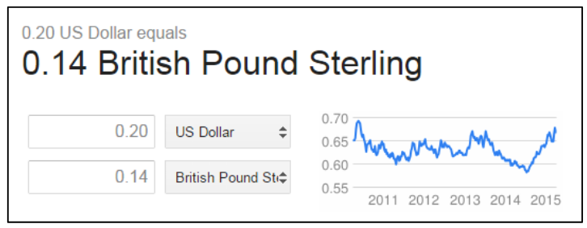
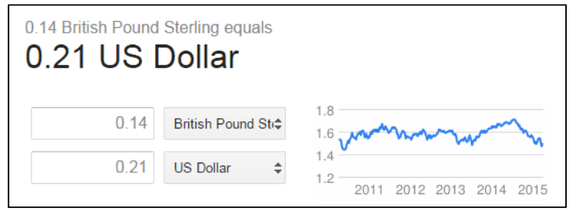
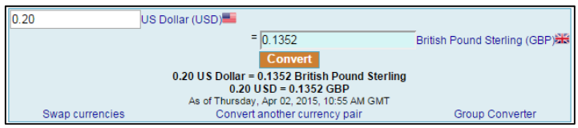
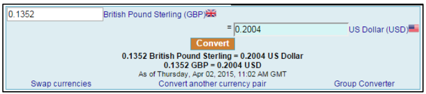
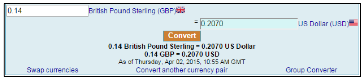

На следующих изображениях показан пример курсов обмена (USD в GBP и обратно) в Google в определенный момент времени:
Рисунок 4: Курс обмена USD в GBP в Google (округление до двух знаков после запятой)
Рисунок 5: Курс обмена GBP в USD в Google (округление до двух знаков после запятой)
Поскольку Google округляет числа до двух знаков после запятой, можно было конвертировать $0.20 в £0.14 (примерно £0.1352 до округления), а затем конвертировать £0.14 обратно в $0.21 (примерно $0.2070 до округления), получая прибыль $0.01. Повторяя это 100 раз, можно было получить доллар.
Однако на другом сайте (LikeForex.com) в то же время курс отображался с округлением до четырех знаков:
Рисунок 6: Курс USD в GBP на LikeForex (4 знака)
Рисунок 7: Курс GBP в USD на LikeForex (4 знака)
Рисунок 8: Курс GBP в USD на LikeForex (4 знака)
В этом случае $0.20 конвертировались в £0.1352, а затем обратно в $0.2004, давая прибыль $0.0004. Для получения доллара потребовалось бы 2500 таких операций.
Если финансовое приложение конвертирует валюты без комиссии или без разных курсов покупки/продажи в пользу компании, это может привести к финансовой выгоде для атакующего [2].
Приложения для покупок с поддержкой мультивалютности также уязвимы, когда пользователь может купить товар в одной валюте и вернуть его в другой.
Приложения, позволяющие вносить депозиты (банки, карты международных звонков, азартные сайты) уязвимы, если поддерживают мультивалютность с разными курсами и позволяют мгновенно выводить средства без комиссии. Смена валюты счета после депозита также может привести к уязвимости, особенно если приложение использует курс, отличный от платежного шлюза (см. раздел "Валютный арбитраж").